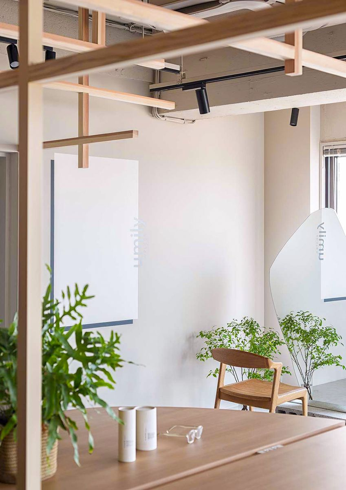
Entry
髪のことなら、
まずこの人に相談したい。
そう思われる
美容師になろう。
売り込まなくても求められて、
10年後も、自信を持って
この仕事を続けていけるように。
まずは見学だけでも大歓迎です。
「応募」というより、気軽にLINEで
話してみる感覚で大丈夫です。
© 2026 RuCOR. Group
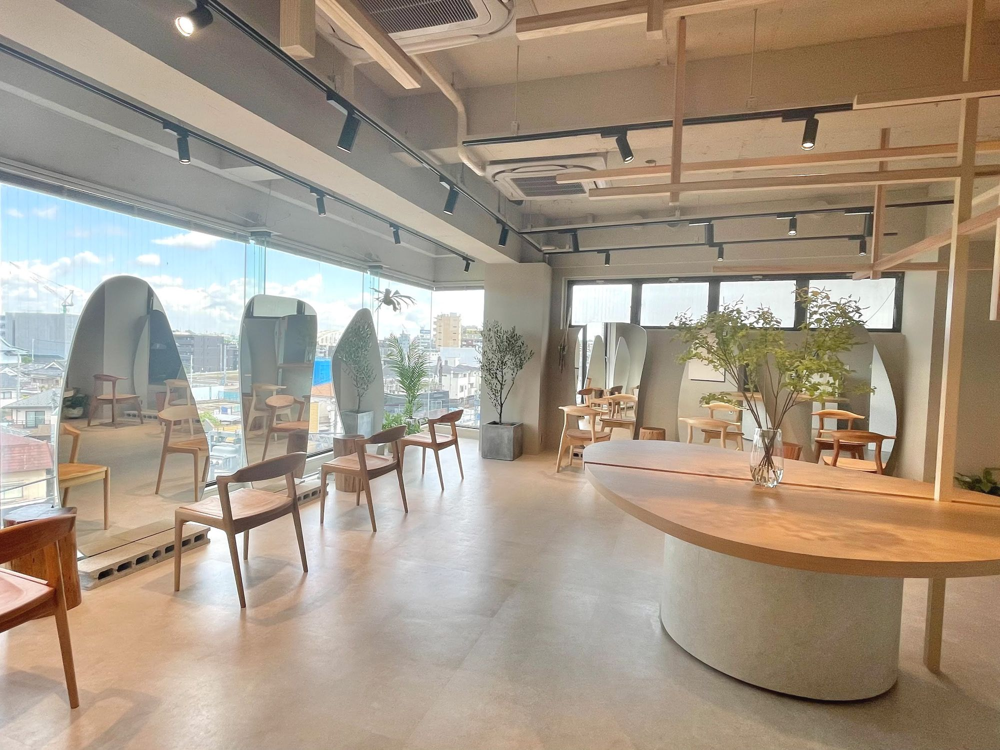
Recruit — Stylist
技術を磨けば、きっと変わる。
そう思って、
頑張ってきたはずなのに。
Now
便利なものは、これからも増えていく。
それでも、
人が人に求めるものは変わらない。
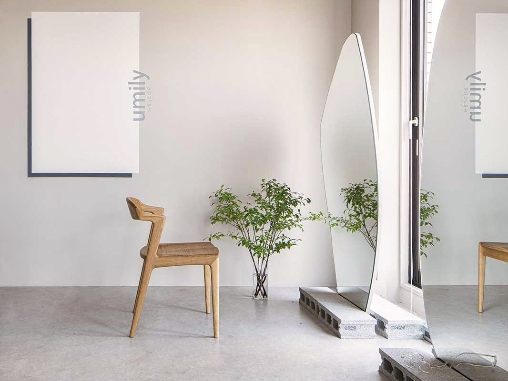
便利になるほど、
人にしかできないことの価値は、
大きくなっている。
美容室も、きっと同じです。
それなのに。
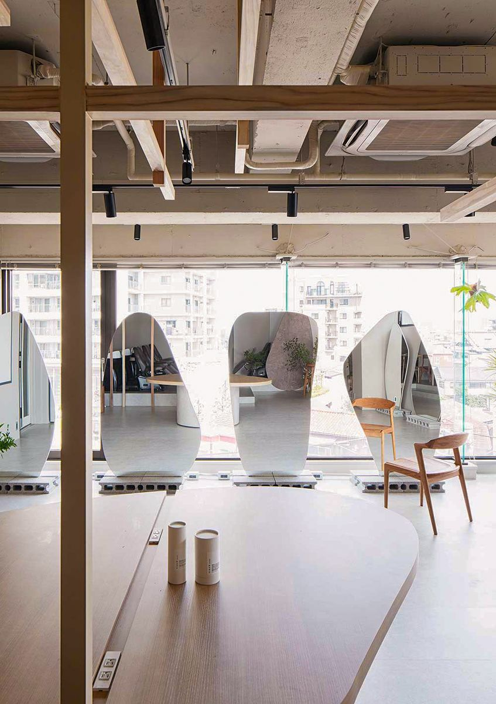
大手サロンで9年。
ハイライトやブリーチを中心に、
技術を磨いてきました。
でも、見ていたのは
「その日の仕上がり」だけ。
今のサロンに移った初年度。
指名率63%、リピート率48%。
新規のお客様に来ていただいても、
次につながらない。
取りこぼしてばかりの毎日でした。
Why
美容室の技術には、
マニュアルがあって、講習があって、
段階を踏んで学べる仕組みがあります。
でも、接し方や汲み取り方、
相談に乗る力を学ぶ仕組みは、
ほとんどありません。
だから、技術だけが磨かれ、
技術だけが売り物になっていく。
美容師がみんな技術だけを売り物にすると、
お客様は、値段で比べるようになります。
「同じなら、
安いところでいいんじゃないか」
さらに、SNSや予約サイトに並ぶのは、
仕上がりの写真。
お客様もそれを見て選ぶから、
ますます、技術だけの勝負になっていく。
例えば。
お客様「色が落ちてきたから、染めたい」
そう言われたとき、昔の私は、
できるかできないかで答えて、
希望の色に染めて、終わっていました。
でも、同じ「染めたい」でも――
技術は同じでも、
ここを汲み取れるかどうかで、
お客様に届くものは、
まったく変わります。
最初の問いの答えは、
ここにあります。
お客様が美容師に
本当に求めているのは、
技術の、その先。
人にしかできない
関わり方です。
足りなかったのは、技術だけじゃない。
もう一つを学ぶ場所が、なかっただけです。
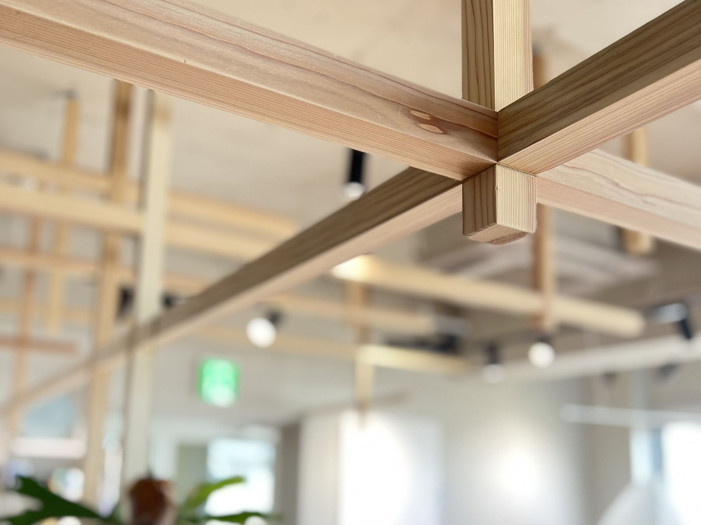
What you learn
技術
髪質改善メーカーの認定講師であるオーナーのもと、マニュアルと理論から、段階を踏んで学べます。
関わり方
悩みと、なりたい姿を汲み取る。相談に乗る。お客様と向き合う力も、教わりながら、実践の中で身につけていきます。
向き合える環境
新規のお客様が絶えず来店し、一人ひとりとじっくり向き合えます。
私も、オーナーに連れられて、
髪質改善とカウンセリングを
一から学び直しました。
一番変わったのは、カウンセリングでした。
「このカラーにしたい」と言われたら、
なぜそうしたいのか、
この先どうなっていきたいのかまで、
話すようになりました。
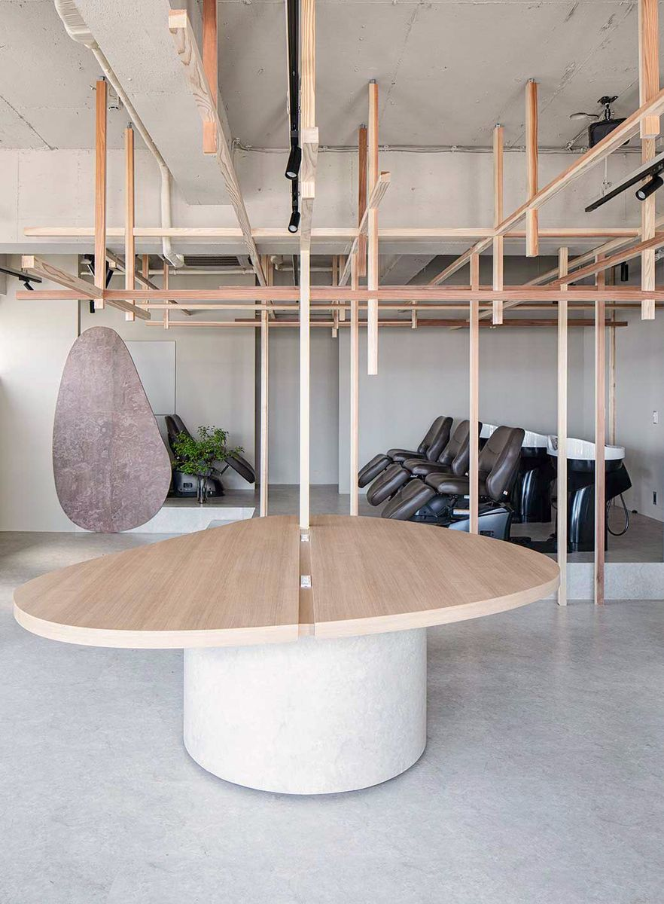
Relationship
求人でよく見る言葉です。
でも、人間関係の良さは、
相性だけで決まるのでしょうか。
すれ違いの多くは、性格ではなく、
小さなコミュニケーションの
ズレから生まれます。
お客様の気持ちを汲み取る力は、
スタッフ同士でも、そのまま活きます。
“人間関係がいい”を、
偶然に任せない。
それがRuCOR.の環境づくりです。
そして、お客様との関わり方は、
自然と数字にも出てきます。
RuCOR.も、数字は大切にしています。
そこは、他の美容室と変わりません。
ここで学ぶのは、
そこにたどり着くまでの道のりです。
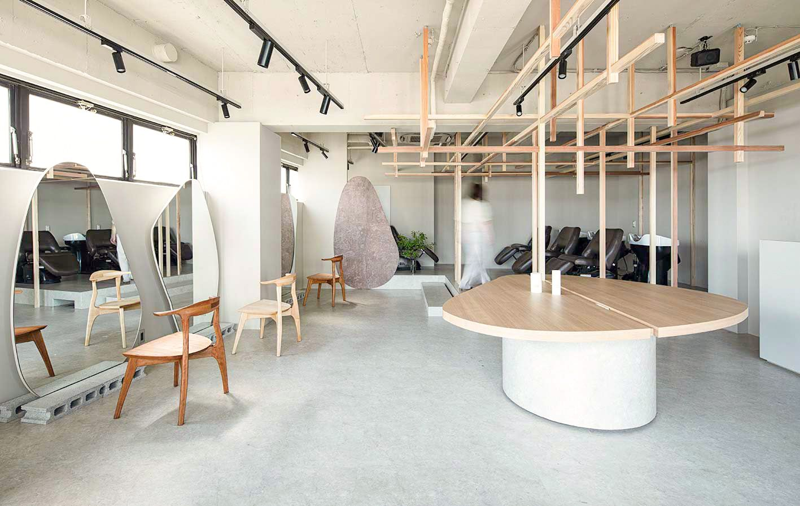
売上のために、メニューを勧める。
でも、それは本当に
お客様が求めていることでしょうか。
勧めるほど気が引けて、
押し売りになっていないか怖くなる。
単価アップニーズアップ
目指すのは、
単価アップではなく、ニーズアップ。
お客様がどうなりたいのかを、
汲み取ることです。
すると、売り込まなくても、お客様の方から
「次は、それもお願いしたい」と
言われるようになる。
売るのではなく、求められる。
単価は、その結果としてついてきます。
帰り道に、
今日の提案を後悔しなくていい。
After
私の、今
入社初年度 → 2025年度
／年間およそ1,000件の施術
今は、予約が取りづらいと言っていただけるくらいになりました。
ほかのスタイリストの声｜入社してからの働き方
以前は仕事に追われて自分の時間がありませんでした。でもRuCOR.に入ってから、仕事もプライベートも諦めずに楽しめるようになりました。
Numbers
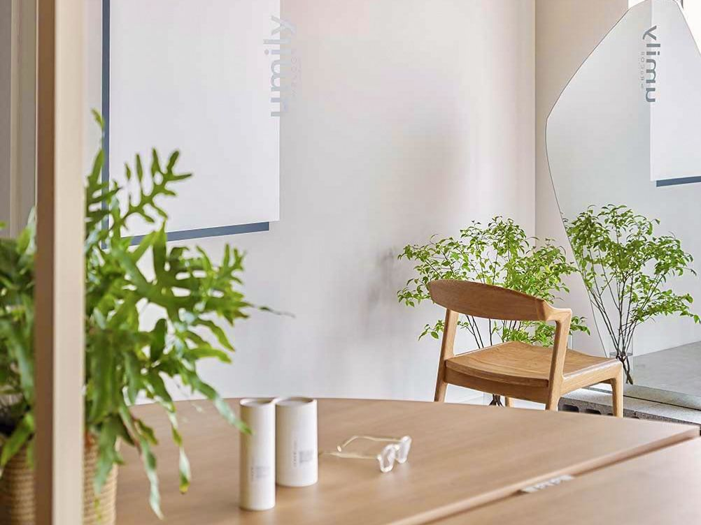
Education
Owner message
技術を磨くことは、もちろん大切です。RuCOR.が髪質改善を軸にしているのも、髪の悩みに一番深く寄り添える技術だと思っているからです。
でも、どれだけ技術を磨いても、お客様が本当に悩んでいることや、どうなりたいかを汲み取れなければ、その技術は届きません。
技術と、人にしかできない関わり方。その両方を強みにして、価格ではなく価値で選ばれる美容師を、一緒に育てていきたいと思っています。まずは気軽に話を聞きに来てください。
髪にドラマを。認定講師福士 和也
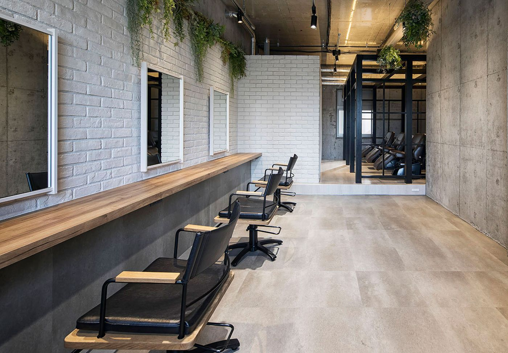
Philosophy
その場限りじゃない、
お客様の未来を変える。
技術で出会い、人として信頼される。
縁ある人の人生の質を上向かせる
会社でありたいと考えています。
大切にしている6つのこと
Persona
技術を磨けば変わると信じて、
頑張ってきた。
これからは、お客様との向き合い方も
学んでみたい。
そんな方を、特に歓迎します。
Brands
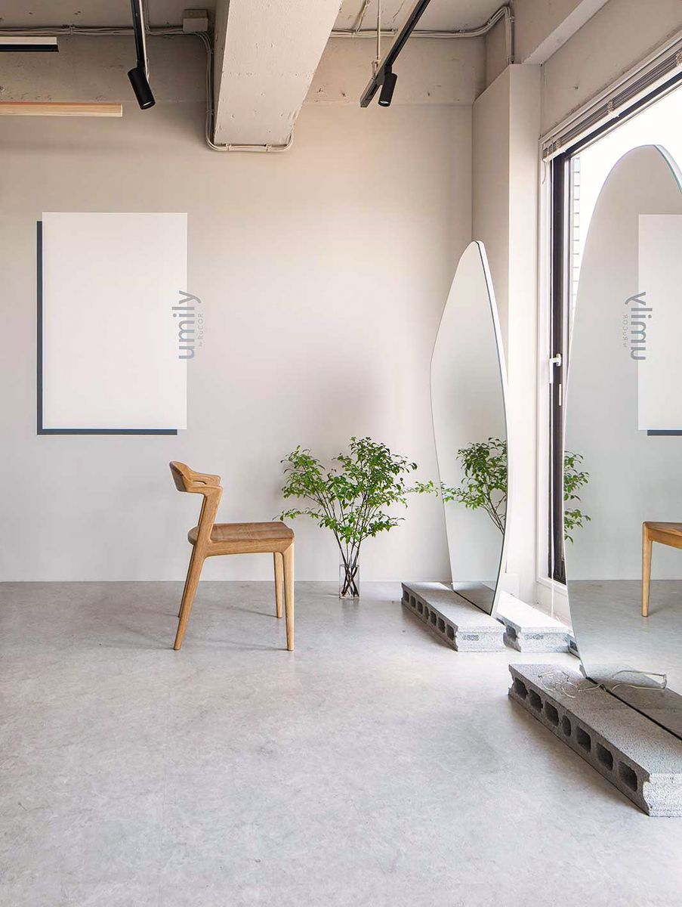
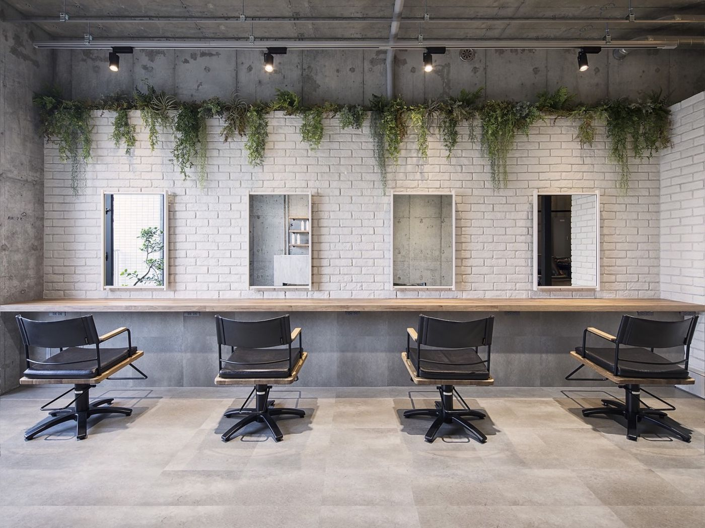
今回の募集は、髪質改善に特化したブランド「umily by RuCOR.」でのポジションです。
Job info
FAQ
はい。入社後の研修終了後から担当できます。
発信が得意でなくても問題ありません。RuCOR.ではSNSは強制していません。
美容師免許をお持ちであれば経験年数は問いません。研修でしっかりキャッチアップできます。
はい。マニュアルと研修で基礎から学べるので、未経験からでも技術を身につけられます。
はい。お客様と向き合う力も、技術と同じように、教わりながら身につけていけます。
はい、まずはサロンの雰囲気を見に来ていただくだけでも歓迎です。

Entry
売り込まなくても求められて、
10年後も、自信を持って
この仕事を続けていけるように。
まずは見学だけでも大歓迎です。
「応募」というより、気軽にLINEで
話してみる感覚で大丈夫です。
© 2026 RuCOR. Group